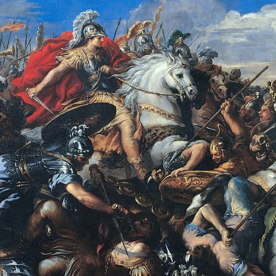
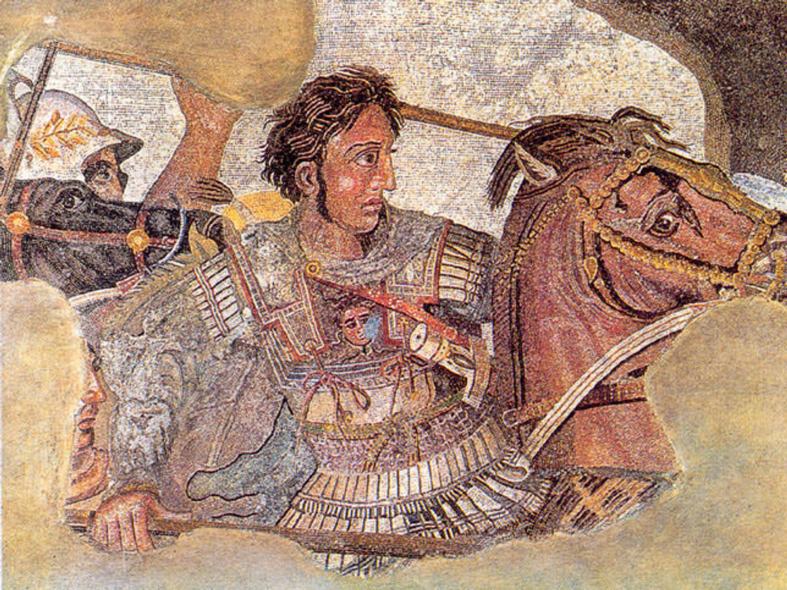

Sejarah

Alexander lahir pada tahun 356 SM di Pella, ibu kota Makedonia. Ia
adalah putra Raja Filipus II dari Makedonia dan Olympias, seorang
putri Epiros. Alexander dididik oleh Aristoteles, salah satu filsuf
terbesar Yunani kuno, yang mengajarinya berbagai disiplin ilmu,
termasuk filsafat, ilmu politik, seni, dan ilmu militer.
Mewarisi Tahta
Pada tahun 336 SM, Filipus II dibunuh, dan Alexander yang baru
berusia 20 tahun naik takhta sebagai raja Makedonia. Di usia muda,
Alexander sudah menunjukkan kemampuannya sebagai pemimpin dan ahli
strategi militer. Dia berhasil mengonsolidasikan kekuasaannya
dengan cepat, memadamkan pemberontakan di Yunani dan mengamankan
kerajaan ayahnya.
Penaklukan

Alexander dikenal karena kampanye militer luar biasanya yang dimulai
pada tahun 334 SM. Tujuannya adalah menaklukkan Kekaisaran Persia
yang saat itu merupakan kekaisaran terbesar di dunia.
Persiapan dan Invasi Awal (334 SM)

Alexander mempersiapkan ekspedisi militernya dengan matang,
mengumpulkan pasukan sekitar 50.000 prajurit, yang terdiri dari
orang-orang Makedonia, Yunani, dan tentara bayaran. Pasukannya
dilengkapi dengan infanteri yang kuat (falanks) dan kavaleri yang
cepat, yang akan menjadi salah satu kunci kemenangan dalam
kampanye ini.
Pada musim semi tahun 334 SM, Alexander memimpin pasukannya
menyeberangi Hellespont (sekarang Dardanella) ke Asia Kecil (Turki
modern) untuk memulai invasi.
Pertempuran Granicus (334 SM)
.png)
Pertempuran besar pertama dalam penaklukan Persia adalah
Pertempuran Granicus di tepi Sungai Granicus, di barat laut Asia
Kecil. Di sini, Alexander menghadapi satrap-satrap (gubernur)
Persia dan kontingen kavaleri mereka. Alexander sendiri hampir
terbunuh dalam pertempuran ini, tetapi ia berhasil memimpin
pasukannya untuk menghancurkan pasukan Persia, yang membuka jalan
ke Asia Kecil bagi Makedonia.
Penaklukan Asia Kecil

Setelah kemenangan di Granicus, Alexander terus maju ke Asia Kecil
dan menaklukkan kota-kota penting, termasuk Sardis dan
Halikarnassos. Kota-kota ini sebagian besar menyerah tanpa
perlawanan besar, karena pasukan Persia yang tersisa di wilayah
tersebut sangat terpukul.
Di sepanjang perjalanan, Alexander berhasil memenangkan hati
penduduk lokal dengan kebijaksanaan dan perlakuannya yang baik
terhadap mereka, sekaligus memadamkan pemberontakan yang muncul di
beberapa tempat. Penaklukan Asia Kecil berlangsung relatif cepat,
dan pada saat ia mencapai Kilikia, pasukan Persia mulai
mempersiapkan perlawanan yang lebih terorganisir.
Pertempuran Issus (333 SM)
Setelah berhasil menguasai Asia Kecil, Alexander menghadapi Raja
Darius III dalam Pertempuran Issus (di wilayah yang sekarang
menjadi bagian dari Suriah). Issus adalah pertempuran besar
pertama antara Alexander dan Darius, yang secara pribadi memimpin
pasukan Persia.
Meskipun Darius memiliki pasukan yang jauh lebih besar (sekitar
100.000 hingga 600.000 prajurit, menurut sumber-sumber kuno),
medan pertempuran yang sempit di dekat pantai meminimalkan
keuntungan numerik Persia. Alexander memimpin serangan frontal
yang berani, langsung menargetkan posisi Darius. Darius, yang
panik, melarikan diri dari medan pertempuran, meninggalkan
keluarganya dan harta bendanya. Kekalahan ini merupakan pukulan
telak bagi moral pasukan Persia dan memberi Alexander kontrol atas
Suriah dan Fenisia.
Penaklukan Mesir (332 SM)

Setelah kemenangan di Issus, Alexander melanjutkan penaklukannya
ke selatan. Ia mengepung kota pelabuhan penting Tirus selama tujuh
bulan sebelum berhasil merebutnya. Setelah itu, ia bergerak ke
Mesir, yang saat itu merupakan provinsi di bawah Kekaisaran
Persia.
Di Mesir, Alexander disambut sebagai pembebas dari penindasan
Persia, dan ia segera mendirikan kota Alexandria di tepi Laut
Tengah, yang nantinya menjadi pusat ilmu pengetahuan dan
kebudayaan Helenistik. Di Mesir, Alexander juga melakukan
perjalanan ke Oasis Siwa, di mana ia diterima sebagai anak Dewa
Amun, yang memperkuat citranya sebagai penguasa ilahi.
Pertempuran Gaugamela (331 SM)
Kemenangan di Mesir memberikan Alexander waktu untuk
mengonsolidasikan kekuasaannya di Mediterania timur. Pada tahun
331 SM, Alexander memimpin pasukannya kembali ke timur untuk
menghadapi Darius III dalam pertempuran besar yang akan menentukan
nasib Kekaisaran Persia.
Di Pertempuran Gaugamela, Darius sekali lagi membawa pasukan yang
sangat besar, dengan memperkuat pasukannya dengan gajah perang dan
kereta perang. Gaugamela (dekat modern-day Mosul, Irak) adalah
pertempuran terbuka di mana Persia berharap bisa menggunakan
keunggulan jumlah mereka.
Namun, Alexander sekali lagi menunjukkan kejeniusan taktisnya.
Dengan menggunakan formasi falanks untuk menahan serangan frontal
Persia dan memimpin serangan kilat dengan kavaleri untuk memukul
sayap musuh, Alexander berhasil membongkar barisan pasukan Persia.
Darius III sekali lagi melarikan diri dari medan perang, dan kali
ini, Kekaisaran Persia runtuh.
Kejaran dan Akhir Darius III
Setelah kemenangan di Gaugamela, Alexander memasuki kota-kota
besar Persia, termasuk ibu kota Babilonia, Susa, dan Persepolis.
Di Persepolis, ia membakar istana kerajaan, yang dianggap sebagai
balas dendam atas pembakaran Athena oleh Persia dalam perang
Yunani-Persia pada masa lalu.
Darius III terus melarikan diri ke timur, tetapi akhirnya ia
ditangkap dan dibunuh oleh salah satu satrap Persia, Bessus, yang
berharap bisa merebut kekuasaan. Bessus kemudian menyatakan
dirinya sebagai raja, tetapi Alexander mengejar dan
mengalahkannya.
Runtuhnya Kekaisaran Persia
Dengan kematian Darius III dan penaklukan Persepolis, Kekaisaran
Persia Achaemenid secara efektif berakhir. Alexander mengangkat
dirinya sebagai Raja Asia dan mulai mengintegrasikan unsur-unsur
kebudayaan Persia ke dalam administrasi kerajaannya. Ia mengadopsi
beberapa adat dan cara berpakaian Persia serta menikahi perempuan
bangsawan Persia untuk menggabungkan dua budaya.
kematian
Pada puncak kekuasaannya, Alexander menguasai wilayah yang
membentang dari Yunani, Mesir, Persia, hingga India. Namun, pada
usia 32 tahun, Alexander tiba-tiba jatuh sakit dan meninggal pada
tahun 323 SM di Babilonia. Penyebab kematiannya masih menjadi
misteri, dengan beberapa teori yang mencakup malaria, tipus, atau
keracunan.
Setelah kematiannya, kekaisarannya terbagi-bagi di antara para
jenderalnya (di mana kekaisaran ini disebut sebagai Diadokhoi),
karena Alexander tidak meninggalkan pewaris yang jelas. Kekaisaran
yang dibangunnya segera runtuh, tetapi warisannya sangat besar.